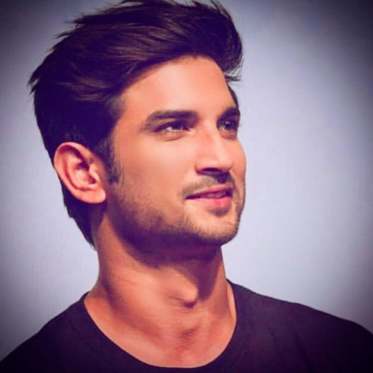
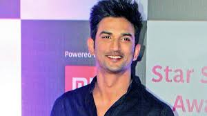
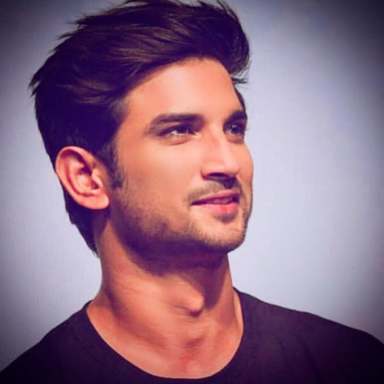
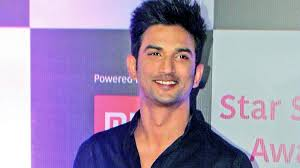

Sushant_Singh_Rajput


 



One of Greatest Actor Ever
Sushant Singh Rajput (21 January 1986 – 14 June 2020) was an Indian actor who is best known for his work in Hindi cinema.Rajput started his career with television serials. His debut show was Star Plus's romantic drama Kis Desh Mein Hai Meraa Dil (2008), followed by a starring role in Zee TV's soap opera Pavitra Rishta (2009–2011).Rajput made his film debut in the buddy drama Kai Po Che! in 2013. He then starred in the romantic comedy Shuddh Desi Romance (2013) and as the titular detective in the action thriller Detective Byomkesh Bakshy! (2015). His highest-grossing releases came with a supporting role in the satire PK (2014), followed by the titular role in the sports biopic M.S. Dhoni: The Untold Story (2016). For his performance in the latter, he received his first nomination for the Filmfare Award for Best Actor. Rajput went on to act in the commercially successful films Kedarnath (2018) and Chhichhore (2019).His last film, Dil Bechara (2020), was released posthumously on Hotstar.NITI Aayog, the policy think-tank of the Indian government, signed him to promote the Women Entrepreneurship Platform (WEP).Apart from acting and running a technological startup,Rajput was actively involved in helping young students. He was also the co-founder of an AI and technology company and a charity based company for social work.Rajput died by suicide at his home in Bandra, Mumbai in June 2020, at age 34.